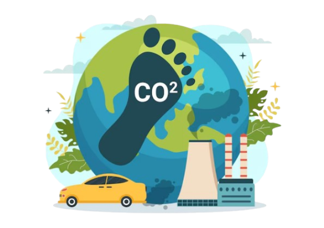
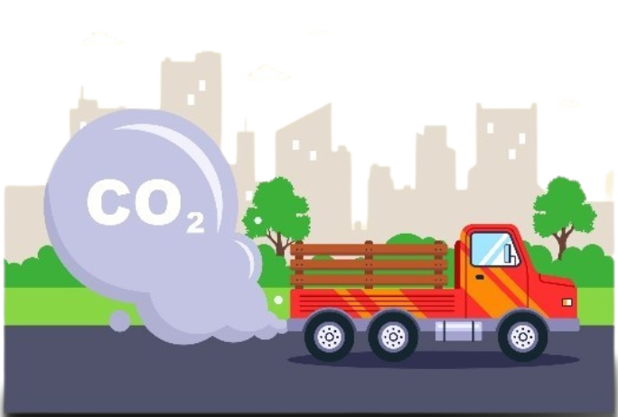
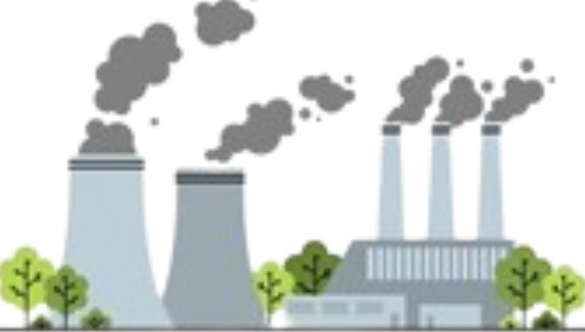
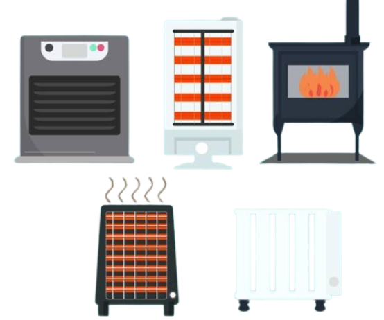

¡Conoce un poco más acerca de la Huella de Carbono!
En la actualidad, la crisis ambiental representa uno de los mayores desafíos que enfrenta la humanidad, y la huella de carbono es un indicador clave para comprender y mitigar nuestro impacto en el planeta. Este proyecto interdisciplinario, titulado Eco Educa: Plataforma Interactiva de Educación Ambiental, tiene como objetivo concienciar sobre la importancia de reducir las emisiones de gases de efecto invernadero mediante estrategias sostenibles y el uso responsable de los recursos. A través del análisis de la huella de carbono y la implementación de herramientas tecnológicas, buscamos fomentar un cambio de hábitos en la comunidad educativa, promoviendo acciones concretas para la protección del medio ambiente y la construcción de un futuro más sostenible.
La huella de carbono es un indicador ambiental que mide la cantidad total de gases de efecto invernadero (GEI), principalmente dióxido de carbono (CO2), emitidos directa o indirectamente por una persona, organización, evento o producto. Estas emisiones contribuyen al calentamiento global y se expresan en unidades de dióxido de carbono equivalente (CO2e).
Para medir la huella de carbono, se realiza un cálculo que incluye:
La huella de carbono tiene un impacto profundo y directo en nuestro planeta. Nuestras emisiones de gases de efecto invernadero están provocando el derretimiento de los glaciares y la acidificación de los océanos, alterando significativamente los hábitats naturales y amenazando a innumerables especies. Como resultado, la biodiversidad está en riesgo y muchas especies se enfrentan a la extinción debido a cambios en sus ecosistemas.
Además, la huella de carbono está asociada con un aumento de eventos climáticos extremos, como huracanes más intensos, sequías prolongadas e inundaciones devastadoras, que impactan no solo a los ecosistemassino también a las comunidades humanas. Tomar medidas para reducir nuestra huella no es solo una opción, ¡es una responsabilidad urgente para proteger el futuro de nuestro planeta!
El uso de vehículos particulares que funcionan con gasolina o diésel es una de las principales fuentes de emisiones. Por ejemplo, un litro de gasolina genera aproximadamente 2.31 kg de CO2e, mientras que el diésel genera 2.68 kg de CO2e por litro. Los aviones, barcos y el transporte público también contribuyen, aunque este último es más eficiente en términos de emisiones por pasajero.
El impacto depende de la fuente energética utilizada. Las plantas que funcionan con carbón tienen factores de emisión muy altos, aproximadamente 820 gCO₂e por kWh, mientras que las energías renovables, como la solar o la eólica, producen emisiones casi nulas. Optar por fuentes renovables reduce significativamente nuestra huella de carbono.
Los sistemas de calefacción basados en la combustión de gas natural, petróleo o biomasa generan emisiones notables. Por ejemplo, un metro cúbico de gas natural emite alrededor de 2.75 kg de CO₂e. En climas fríos, adoptar tecnologías más eficientes o energía renovable para calefacción puede disminuir estas emisiones.
La producción, transporte y desecho de bienes también contribuyen al impacto ambiental. Los alimentos como la carne de res tienen factores de emisión elevados, alcanzando hasta 27 kgCO₂e por kilogramo producido, debido al uso de recursos en su crianza y transporte. Por otro lado, las verduras emiten solo 2 kgCO₂e por kilogramo. Los alimentos procesados también afectan muy considerablemente al aumento de emisiones de CO2, en todos sus procesos de producción, consumo e incluso desecho. Optar por productos locales y de menor impacto puede marcar la diferencia.
Utilizado para medir emisiones muy pequeñas, como las de un aparato electrónico por hora
Apropiado para actividades domésticas o emisiones relacionadas con un solo producto
Ideal para representar grandes cantidades, como las emisiones anuales de una organización o de un evento global.
Donde:
Datos de consumo: Representa la cantidad de recurso utilizado (como litros de combustible, kilovatios hora de electricidad, o kilómetros recorridos).
Factor de emisión: Es un valor que indica cuántos kg de CO₂e son emitidos por unidad de consumo del recurso. Por ejemplo: Combustión de gasolina: 2.31 kgCO₂e/litro; Electricidad basada en carbón: 820 gCO₂e/kWh; Producción de carne de res: 27 kgCO₂e/kg; y otros más.
- El concepto de toneladas equivalentes de CO₂ (tCO₂e) se utiliza para medir y comparar el impacto de distintos gases de efecto invernadero (GEI) en términos de su equivalencia con el dióxido de carbono (CO₂).
- Cada gas tiene un Potencial de Calentamiento Global (GWP) que indica cuánto contribuye al calentamiento global en comparación con el CO₂. Por ejemplo:
El metano (CH₄) tiene un GWP de 28-36 veces el del CO₂. De esta manera, si se emiten 1 tonelada de metano, se traduce en 28-36 toneladas equivalentes de CO₂.
- Las tCO₂e permiten sumar las emisiones de diferentes gases en una única métrica estandarizada, facilitando la medición de la huella de carbono y el diseño de estrategias de mitigación del cambio climático.
A continuación, presentamos una pequeña estructura básica de la programación para ir ya haciéndonos una idea de que tendremos que aplicar en la fase de diseño y codificación para el calculo de la huella de carbono:
Al optar por productos locales, conocidos también como de kilómetro cero, contribuimos a disminuir las emisiones de CO2 generadas por el transporte y la refrigeración de los alimentos. Asimismo, apoyamos el crecimiento de la economía local. ¡Es una elección llena de ventajas!
Los electrodomésticos de última generación cada vez son más sostenibles y eficientes. Además, consultar el etiquetado de los aparatos que vamos a adquirir es esencial para saber si están fabricados siguiendo los estándares de sostenibilidad a lo largo de toda la cadena de valor. Es importante conocer esto ya que los electrodomésticos forman parte de nuestra vida diaria
Para ahorrar energía en casa, es útil desenchufar los aparatos cuando no se usen, mantener una temperatura entre 18°C y 23°C para reducir el consumo de calefacción y aprovechar la luz natural durante el día. Además, cerrar el grifo al lavarnos las manos o cepillarnos los dientes puede generar un ahorro significativo de agua.
El uso de transporte público, bicicletas y patinetes eléctricos ayuda a disminuir la huella de carbono, mejorar la movilidad urbana y aumentar la calidad de vida de los ciudadanos. Asimismo, opciones como el carsharing colaboran en reducir el tráfico y los costos asociados al mantenimiento de vehículos privados.